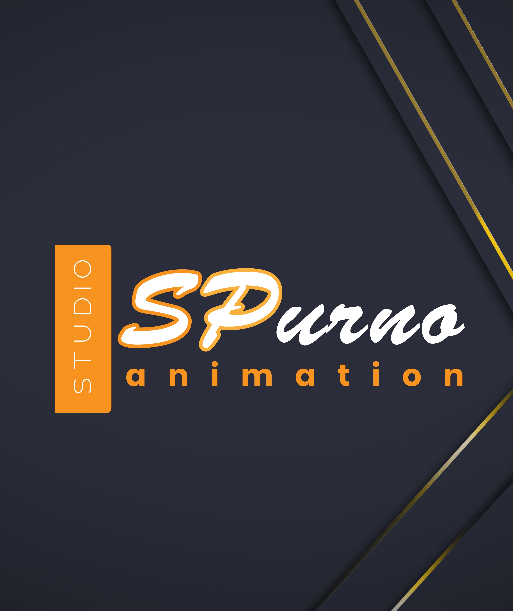

Animation Studio After Effects: Professional Motion Graphics Production Pipeline

Professional animation studios bring expertise, creativity, and technical skill to every motion graphics project. Whether you need explainer videos, commercial animations, broadcast graphics, or custom template development, the right studio partnership elevates your content from ordinary to extraordinary. Working with an established studio offers consistent quality standards, reliable project management, and the ability to scale resources based on project requirements. SPurno Animation Studio, based in Dhaka, Bangladesh, provides professional After Effects animation services to clients around the world, delivering broadcast-quality motion graphics that meet international standards. Explore our collection of background animation stock footage and motion graphics.
Why Choose an Animation Studio
The global animation market has experienced significant growth in recent years, driven by increasing demand for video content across digital platforms, broadcast media, and corporate communications. Professional animation studios offer several distinct advantages over hiring individual freelancers, including consistent quality standards, reliable project management, and the ability to scale resources based on project requirements. Studios maintain quality control processes, backup resources for unexpected situations, and established workflows that ensure timely delivery.
Bangladesh has emerged as a competitive destination for animation services, offering a unique combination of creative talent, technical expertise, and cost-effective pricing. When selecting an animation studio, consider factors such as portfolio quality, industry experience, communication capabilities, and production workflow. A professional studio should demonstrate proficiency across multiple animation styles, provide clear project timelines, and maintain transparent communication throughout the production process.
Services Offered by Professional Animation Studios
Full-service animation studios provide a comprehensive range of motion graphics and visual effects services. Understanding these service categories helps clients identify the right support for their specific project needs:
- Custom Motion Graphics and Animation Projects — Branded content, product animations, explainer videos, and promotional materials tailored to specific brand guidelines and marketing objectives. The process begins with a creative brief, followed by concept development, style frame creation, and iterative review cycles
- After Effects Templates and Preset Development — Reusable animation assets with customizable controls for colors, text, and timing, making them accessible for non-animators to customize and deploy independently within their organizations
- Explainer Videos, Product Demos, and Brand Content — Compelling visual narratives that combine animation, voiceover, and music to communicate complex ideas in an engaging, easy-to-understand format
- Broadcast Graphics, Lower Thirds, and Title Sequences — Professional broadcast packages that meet industry standards for television and streaming platforms, including channel branding, show opens, and informational graphics
- Visual Effects Compositing and Motion Tracking — Integration of live-action footage with computer-generated elements for seamless visual storytelling, including screen replacements, set extensions, and object removal
- 3D Animation and Cinematic Visual Effects — Advanced 3D rendering, particle systems, and cinematic effects for high-impact productions that require dimensional depth and realistic simulation
Production Pipeline Overview
A structured production pipeline ensures consistent quality and efficient delivery across all animation projects. Understanding each phase helps clients prepare and collaborate effectively with their chosen studio:
Pre-Production — This foundational phase includes project briefing, creative concept development, scriptwriting, storyboarding, and style frame creation. The pre-production phase is where creative direction is established and approved before any animation begins. Clients receive mood boards, style frames, and animatics that visualize the final product, allowing for feedback and refinement before production resources are committed.
Production — During the production phase, animators create the approved content using After Effects, Cinema 4D, and other specialized tools. This phase includes asset creation, animation, compositing, motion graphics development, and initial rendering. Production follows the approved storyboards and style frames with regular checkpoints for client review and feedback.
Post-Production — The final phase includes sound design, music composition, voiceover recording, color grading, and final rendering. Post-production also includes quality assurance checks, format-specific exports for different platforms, and delivery of source files when requested.
Studio Workflow
SPurno Animation Studio follows a proven workflow that balances creative exploration with efficient production. This structured approach ensures that every project receives the right level of creative attention while meeting deadlines and budget parameters:
- Initial Consultation — Share your project brief, style references, and technical requirements. The studio provides preliminary recommendations and a project timeline based on your specific needs
- Concept Development — Receive concept designs, style frames, and animation samples for approval before full production begins. This stage ensures creative alignment and reduces the need for major revisions later
- Draft Animation — Review draft animations and provide structured feedback for refinements. The collaborative review process uses frame-accurate feedback tools for clear communication
- Final Delivery — Receive final deliverables in your preferred format and resolution, including source project files upon request. Multiple format versions are provided for different distribution channels
Quality Assurance and Delivery Standards
Professional animation studios maintain rigorous quality control processes to ensure consistent output across all projects. Quality assurance typically includes technical checks for frame rate accuracy, resolution compliance, color space consistency, and audio synchronization. Creative reviews evaluate animation smoothness, timing appropriateness, and brand alignment with the project brief.
SPurno Animation Studio delivers projects in multiple formats to accommodate different distribution channels. Standard deliverables include broadcast-quality MP4 files, optimized web versions with appropriate compression, and source project files for clients who need future editing capability. All projects undergo internal review before client delivery to identify and resolve any issues proactively.
Technical Quality Standards include verification of frame rate accuracy to prevent stuttering or dropped frames, resolution compliance ensuring all deliverables meet the specified output dimensions, color space consistency across all project elements and export formats, audio synchronization with precise alignment of sound effects, voiceover, and music, and file integrity checks to ensure all deliverable files are complete and playable.
Getting Started with Your Animation Project
Beginning a collaboration with a professional animation studio starts with clearly defining your project requirements. Prepare a creative brief that outlines your goals, target audience, brand guidelines, preferred visual style, technical specifications, and budget parameters. The more information you provide upfront, the more accurate your quote and timeline will be.
Most studios offer free consultations to discuss project requirements and provide preliminary recommendations. Use this opportunity to evaluate the studio's communication style, creative thinking, and understanding of your industry. A good studio partnership is built on trust, clear communication, and shared creative vision. Ask about their experience with similar projects, request relevant portfolio samples, and discuss their approach to project management and client feedback.
When budgeting for animation projects, consider that higher quality animation requires more production time and expertise. Complex 3D animation, character animation, and detailed visual effects command higher rates than simpler 2D motion graphics. However, investing in quality animation yields better engagement, stronger brand perception, and longer asset lifespan — making it a cost-effective investment in your brand's visual communication.
| Studio Service Specifications | |
| Project Types | Explainer videos, broadcast graphics, social ads, templates |
| Delivery Formats | MP4, MOV, ProRes, GIF, HTML5, source AEP files |
| Resolution | HD (1920x1080), 4K (3840x2160), custom |
| Turnaround | 1-4 weeks depending on project complexity |
| Revisions | 2-3 rounds of structured feedback included |
| Communication | Email, project management tools, video calls |
Pros
- Consistent quality across all project deliverables
- Reliable project management and on-time delivery
- Access to a team of specialized professionals
- Scalable resources for projects of any size
- Cost-effective compared to Western studio rates
Cons
- Time zone differences may affect communication
- Less personal attention than individual freelancers
- Minimum project sizes may apply
- Creative direction requires clear client input
Verdict
Working with a professional animation studio like SPurno Animation Studio offers the perfect balance of creative expertise, technical capability, and cost efficiency for businesses seeking high-quality motion graphics. Our structured production pipeline ensures consistent quality, reliable delivery, and transparent communication throughout every project. From custom animated content to template development and broadcast graphics, our experienced team delivers broadcast-quality animation that elevates your brand and engages your audience. Contact SPurno Animation Studio to discuss your next animation project and discover how our After Effects expertise can bring your creative vision to life. Browse our portfolio of premium stock assets on Adobe Stock, Shutterstock, and Pond5 to see examples of our production quality.